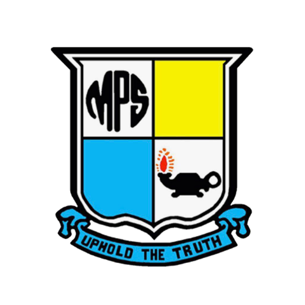

AKTIVITI TERKINI
Rekod OPR
Memuatkan rekod OPR…
SK METHODIST PJ
Menyambungkan RESPONDOPR & PEGAWAI…
OPR Command Centre
OPRCOMMAND CENTRESK METHODIST PJ
Pusat pengurusan OPR yang pantas untuk semua bidang sekolah.
MULAKAN LAPORAN
Empat bidang, satu aliran OPR yang seragam dan pantas.
PULSE SEKOLAH
Pandangan ringkas terhadap dokumentasi OPR sekolah.
AKTIVITI TERKINI
Memuatkan rekod OPR…
BIDANG
Pilih format laporan untuk diteruskan.
BIDANG · JENIS OPR
Isi borang di bawah. Pratonton di sebelah kanan dikemas kini secara langsung.
ARKIB OPR
Jangan tutup halaman. Proses gambar, PDF dan Drive boleh mengambil masa sehingga 1–2 minit.